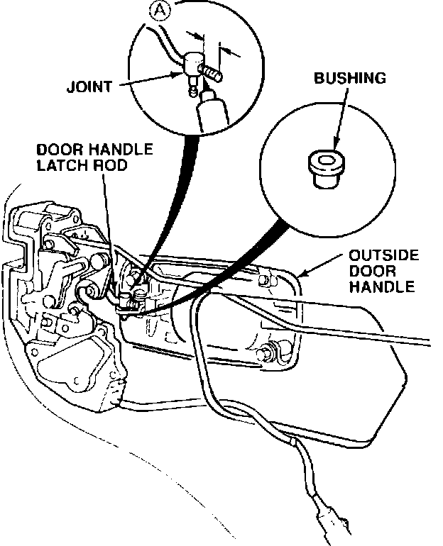
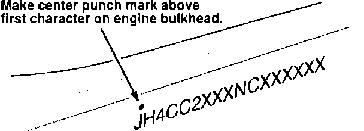

Outside Rear Door Handle - Latch Rod Disconnected
91acura04
June 24, 1991
BULLETIN NO.
91-035
YEAR MODEL VIN APPLICATION
1992 VIGOR Through VIN
JH4CC2...NC005775
Outside Rear Door Handle Latch Rod Update

If someone pulls forcefully on an outside rear door handle while the door is locked, the latch rod may disconnect from the door handle. To prevent this possibility, the latch rod joint and bushing have been improved.
CORRECTIVE ACTION
Replace the door handle latch rod joint and bushing on both rear doors.
Update all cars within the affected VIN range - those in your inventory before sale, and all customer units the first time they're brought in for service.
1. Remove the door panel and carefully pull the upper rear corner of the plastic cover back (see page 20-11 of the service manual).
2. Detach the joint from the outside door handle using a flat tip screwdriver.
NOTE: To ease reassembly, count the number of threads that protrude from the joint (A) before disassembly.
3. Replace the joint and bushing with the parts from the kit (see PARTS INFORMATION).

4. Reconnect the door handle latch rod and make sure the outside door handle works properly. Reattach the plastic cover and reinstall the door panel.
5. Center punch a completion mark above the first character of the VIN on the engine compartment bulkhead.
PARTS INFORMATION
Joint and Bushing Kit: P/N 72108-SL5-305
(Contains two joints, P/N 75411-634-000, and two
bushings, P/N 75612-611-000.)
WARRANTY CLAIM INFORMATION
Operation number: 821150
Flat rate time: 0.8 hour (both doors)
Failed P/N: 72610-SL5-A01
Defect code: 639
Contention code: B01